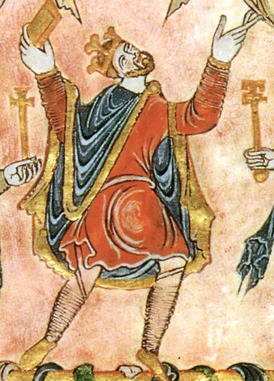

Edgar the Peaceful
The "Peaceful" king: no great wars, a reformed Church — and eight kings rowing him on the River Dee.
England · Reigned 959–975 · Stop 7 of the odyssey
← Learning from the Past: An English Odyssey · ← Eadwig · Edward the Martyr →

- Is a peaceful leader remembered as well as a warrior?
- What does a ceremony show that a law cannot?
- What makes a time "a golden age"?
The words for today's story
Each new word is hidden in a sentence. Read it aloud and say what you think the bold word means from the rest of the sentence — then reveal it and see how close you were.
Now use them — out loud
- Using any four of these words, predict: what kind of reign do you think this will be — and how might it end?
- Which words belong to power and which to danger? Sort them out loud and say why.


The story, in three parts
Read each part. After it, there's a quick comprehension check (try the questions from memory first), then one thing to discuss.
Part 1 — The peaceful king
Edgar, Eadwig's younger brother, became king of all England in 959 at about sixteen. He is called "the Peaceful" because his reign saw no great foreign invasion. He brought Dunstan back and made him Archbishop of Canterbury.
With Dunstan and two other bishops, Æthelwold and Oswald, Edgar backed the Benedictine reform. Monks used to live loosely in many places; now they would follow a strict rule, and many monasteries were rebuilt and enriched.
1. Why is Edgar called "the Peaceful"?
2. What did the Benedictine reform change?
1. His reign had no great foreign invasion or major war.
2. Monasteries were rebuilt and monks followed a strict rule.
- Can a ruler be great without winning wars?
Part 2 — Bath and the boat
Although he had already been king for fourteen years, in 973, when he was about thirty, he was crowned and anointed at Bath in a magnificent ceremony. Parts of the service are still the basis of British coronations today.
Soon afterwards, at Chester, a group of kings from Scotland, Wales and elsewhere met him. Later chroniclers say that six or eight kings rowed him along the River Dee while he steered — a picture of all Britain serving the English king. The details may be exaggerated, but a meeting of kings at Chester is recorded at the time.
1. What happened at Bath in 973?
2. What does the river story claim?
1. Edgar was crowned and anointed in a grand ceremony that influenced later coronations.
2. That several kings rowed Edgar on the River Dee while he steered.
- Why would a king want a symbolic show of power rather than another battle?
Part 3 — Order and money
Around 973 Edgar reformed the coinage: one design across England, with coins struck in many towns and recalled regularly. This was one of the most advanced money systems in Europe. He also issued laws that respected the customs of the Danes in the north.
Edgar died in 975, aged about thirty-two. Later writers remembered his reign as a golden age — partly because the years that followed were so troubled.
1. What was special about Edgar's coinage?
2. How did he treat the Danish north?
1. A single national design, made in many mints and regularly renewed — one of the most advanced systems in Europe.
2. His laws allowed them to keep their own customs.
- Why do people often remember a time as golden only after it has ended?
Grammar — Used to & Would — Past Habits
To describe how life used to be — the habits and customs of a reign — English uses used to and would.
• used to + verb for past habits and states: "People used to believe the king could heal."
• would + verb for repeated actions only (not states): "Every Christmas he would hold court."
• Negative: didn't use to.
1. used to or would?
Complete each sentence about Edgar the Peaceful. Use the word in brackets.
1. Before the reform, monks (live) less strictly.
2. Every few years, the king's men (call) in the old coins.
3. The Danes in the north (follow) their own customs.
1. used to live
2. would call / used to call
3. used to follow
2. Complete with the correct form
1. England (be) more stable under Edgar than before. (state: used to only)
2. At great feasts, the king (sit) among his nobles.
3. People (not / have) one national design of coin.
1. used to be
2. would sit
3. didn't use to have
Hold on to this — you'll need it in the Speak tab.
Going deeper
Edgar's achievement was quiet: institutions. A reformed Church, a national currency, and a coronation ritual that survives to this day. But peace also depends on luck — the Viking world was relatively quiet in his time. His early death left two young sons and a quarrel that ended in murder.
- Was Edgar lucky or skilful?
- Why do ceremonies matter in modern countries?
- What makes money trustworthy?

Stop 7 on the journey → cow. In the Major System Palace, 7 is spelled with the sounds k, which make cow (a black-and-white cow).
Picture a peaceful cow grazing by the River Dee as the boat of kings rows past — stop 7, Edgar the Peaceful.
You don't need the system to follow the story — it's simply a hook that lets you walk the whole odyssey, king by king, in order.
Speak
This is the heart of the lesson — do all of it out loud. The timer is there to keep you going: fill the time with detail rather than escaping it.
Tell the story of Edgar the Peaceful in your own words, as if to someone who has never heard of them. Move through the arc: the young king and Dunstan → the reform of the monasteries → Bath and the boat on the Dee → the coins and the golden-age memory.
Use today's grammar at least three times, and work in at least five key words (peaceful, monastery, reform, currency, mint, anointing, row, symbolic, stable, commemorate).
"Peace is boring — history only remembers conflict." Agree or disagree.
Tell a story from your own world — work, family, the news — that echoes this reign. Stuck for an idea? Pick one of these and run with it:
- A ceremony that mattered more than people expected.
- A system that worked so well no one noticed it.
- A "golden age" in your life or your country.
- A team where different groups kept their own ways.
To finish — the bigger questions
- What modern ritual comes from a thousand-year-old ceremony?
- What regular "review" could you build into your year?
- Before you go — from memory: give two sentences about Edgar the Peaceful using Used to and Would — Past Habits, and say what lesson from this reign you could use this week.
← Learning from the Past: An English Odyssey · ← Eadwig · Edward the Martyr →